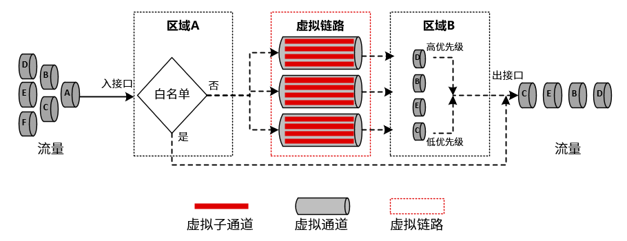

流量管理是指NGFW基于应用、用户、源安全区域、目的安全区域、源地址、目的地址、服务、时间段和通道优先级等流量基础信息对通过的流量进行管理和控制。在NGFW上部署流量控制功能，可以帮助网络管理员合理分配带宽资源，从而提升网络运营质量。
虚拟链路
虚拟链路一般指区域到区域之间通信的链路，关于区域的配置具体请参见 区域。虚拟链路通过接口对来划分，该设置在NGFW设备全局有效。
虚拟链路可以将运营商网络的通信和内部局域网的通信区分开来，分别当作不同的流量管理。虚拟链路上可以配置区域间总的流量管理策略，比如区域间上行或者下行带宽，流量管理策略根据配置的带宽大小进行细分的策略，保证带宽的利用率等。
虚拟通道
虚拟通道是在虚拟链路的基础上对流量的进一步细化管理单位，可以基于网络连接的应用、用户、源IP地址、目的IP地址、服务、时间段，对数据流设置细粒度的带宽管理策略。虚拟通道上还可以配置虚拟子通道对流量进行进一步的细化管理。
在虚拟通道及其虚拟子通道上，可以设置通道的限制带宽、保证带宽、每IP限速、每用户限速、优先级等功能。虚拟通道ID在NGFW设备全局有效。
l保证带宽：保证网络中关键业务所需的带宽；当网络拥堵时，保证带宽能够保护关键业务不受影响。
l限制带宽：虚拟通道最大带宽，通道总的流量不得超过限制带宽。
l优先级：虚拟通道可以设置高、中和低三个优先级；当通道拥塞时，设备将根据队列优先级的高低顺序进行调度。只有高优先级队列中的报文全部调度完毕后，低优先级队列才进入调度；如果多个通道的优先级相同，则按照通道由上到下顺序进行调度，通道顺序可进行调整。
白名单
虚拟通道上支持白名单功能，当匹配虚拟通道白名单指定的IP地址和应用时，可不进行流量策略匹配，直接进行转发。
处理流程
流量进入NGFW后的流量控制功能实现过程如下图所示。

实现处理流程如下：
1）流量从入接口进入时，如果匹配白名单策略，将不进行流量控制策略匹配操作直接从出接口转发；不匹配白名单策略则进行虚拟链路流量策略匹配。
2）流量匹配虚拟链路策略后，会经过虚拟链路的分流后进入相应的虚拟通道和虚拟子通道进行处理。
虚拟通道和虚拟子通道的处理包括：
l丢弃超过预先定义的最大带宽的流量。
l标记流量的优先级，作为后续队列调度的依据。
3）流量从出接口发送时，会进一步受接口带宽的限制；如果流量大于接口带宽，将根据标记的优先级对流量进行队列调度，保证高优先级的报文被优先发送。